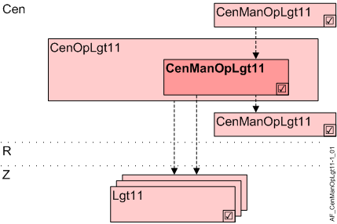

Central manual operation lighting (CenManOpLgt11)
Overview
Application function "Central manual operation lighting 11" (CenManOpLgt11) handles central operation using buttons.

Cen | Central functions |
CenOpLgt11 | Central operation lighting 11 |
CenManOpLgt11 | Central manual operation lighting 11 |
R | Room |
Z | Lighting zone in one room segment |
Lgt11 | Lighting 11, group members |
Function
Central manual operation is equal to local room operation. On and off buttons or two dimming buttons are used to operate lighting. Toggle switches are not supported.
Manual override can be overridden, i.e. automatic mode reinstated, via another integrated button.
The command from this AF is distributed via grouping to the connected lighting zones (Lgt11) or to other AFs CenOpLgt11 (group members).
Functionality for preloaded applications
CenManOpLgt11 can function individually, as group manager, or as a group member (can be configured). Only reduced functionality is available in the higher group manager (without dimming).
Only buttons on KNX PL-Link are supported. It must be predefined as light switch.
The following operating functions are supported:
Command | Description |
|---|---|
Dimming up | Dimming up |
Dimming down | Dimming down |
Switch-on | Switch on |
Switch-off | Switch off |
Multiple buttons can have the same or different functions. Last command wins.
Hierarchical grouping
This AF supports hierarchical grouping. For detailed information, see Hierarchical grouping.
Configuration
 Parameter
Parameter
More states ara available for direct commanding of lighting of CenManOpLgt to the room segments than with hierarchical grouping (e.g. Step up and Step down).
Reduced operation in hierarchies must be parameterized using parameter EnRdcOp.
- If CenManOpLgt11 is used exclusively to command lighting AFs in the room segment, parameter EnRdcOp retains default value 0:No.
- If CenManOpLgt11 is the manager in a hierarchy, parameter EnRdcOp must be set to 1:Yes.
This step is required if it is unclear if lighting AFs are commanded directly and exclusively (in doubt: 1:Yes).
Description | Parameter | Default value |
|---|---|---|
Enable for reduced operation 0:No | EnRdcOp | 0:No |
Interface
Interface | Description | Type | Ref. | Owner | |
|---|---|---|---|---|---|
LgtBtnCol | Collection of lighting pushbutton | ColView | ● | - | |
| LgtBtn | Lighting pushbutton | LgtIn | ◉ | Central function / Device |
Engineering and commissioning
AF is queried in OB 1 since grouping xFBs cannot work in a cycle for an event-triggered chart.
Functionality for free programming
CenManOpLgt11 can function individually, as group manager, or as a group member (can be configured). Only reduced functionality is available in the higher group manager.
The operating functions supported depend on the hierarchy and type of buttons:
AF is a superposed group manager | No | Yes | |||
|---|---|---|---|---|---|
Type of button 1) | TX | PL | TX | PL | |
Command | Description |
|
|
|
|
Stop | Stop | X | X |
|
|
Dimming up | Dimming up | X | X |
|
|
Dimming down | Dimming down | X | X |
|
|
Step up | Step up | X |
|
|
|
Step down | Step down | X |
|
|
|
Switch-on | Switch on | X | X | X | X |
Switch-off | Switch off | X | X | X | X |
Go to level | Go to level | X |
| X 2) |
|
No action | No action |
|
|
|
|
User def.1 | User defined 1 |
|
|
|
|
User def.2 | User defined 2 |
|
|
|
|
User def.3 | User defined 3: Reset to automatic | X |
| X |
|
User def.4 | Open for customized function |
|
|
|
|
User def.5 | Open for customized function |
|
|
|
|
1) Buttons on TX-I/O: The function can be configured.
Buttons on KNX PL-Link must be predefined as lighting buttons.
2) The level is mapped to a value:
0% / 12.5% / 25% / 37.5% / 50% / 62.5% / 75% / 100%.
Multiple buttons can have the same or different functions. Last command wins.
EnRdcOp
As part of direct commanding of CenManOpLgt lighting to the room segments, more states are available than in the case of hierarchical grouping (e.g. Step up and Step down).
Parameter EnRdcOp must be used to parameterize reduced operation in hierarchies.
Reason
Information is exchanged directly via the corresponding Lgt/Shd BA objects (LgtAOut, LgtBOut, BlsOut) between CenManOpXxx11 and Lgt/Shd AFs. As a result, all known commands are available (On, Off, Dimming up/down, Step up/down, Move up/down, etc.).
For communication between two hierarchical managers, there is no such object, as Desigo neither knows a corresponding process value BA object for lighting or blinds.
For this reason, the information must be implemented by means of a multistate object. However, a multistate object does not allow for Step up/down. Thus, the functionality between hierarchical managers must be limited (EndRdcOp = 1:Yes).
As a result, only commands such as On/Off, Auto are available. Step up/down thus cannot be commanded and are converted to On/Off.
Direct commanding
If CenOpManXxx11 is used exclusively for direct commanding of an Lgt/Shd AF in the room segments, the parameter remains at default value (= 0: No).

Hierarchical commanding
If CenManOpXxx11 is used as manager in a hierarchical structure, the parameter must be set to 1:Yes for all managers that also control other managers.
Only the managers at the lowest level of the hierarchy (and thus exclusively control Lgt/Shd AFs in the room segments) remain at 0: No.